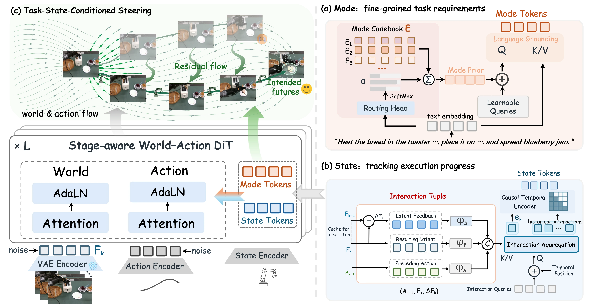
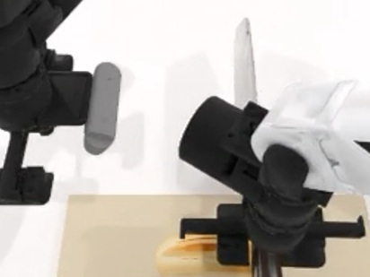

40.9→69.4%
+28.5 percentage points with TaskWAM
Steering World-Action Models toward Intended Future
Task requirements. Execution progress. Intended future.
Across four heterogeneous
robot embodiments.Single arm. Dual arms. Dexterous hands.
Follow the sequence from loading and heating to retrieval and spreading.
A plausible continuation can still miss the task.
Both the instruction and the execution history matter.
The timing of object collection changes the required sequence of actions.
Object collection happens while the microwave is heating.
Object collection follows the heating and reopening steps.
Loading bread and retrieving it after heating can look similar. The preceding interaction distinguishes the next step.
A plausible future can still follow the wrong task or execution stage. TaskWAM grounds world–action generation in fine-grained task requirements and execution progress. Mode Tokens represent the instructed requirements, while State Tokens track progress through closed-loop interaction. Together, they steer generation toward the intended future.
Represent the requirements.
Track the progress. Guide generation.

TaskWAM explicitly grounds world–action generation in both task requirements and execution progress for long-horizon manipulation.
Eight task families vary ordering, timing,
arm assignment, and repetition.

Place the colored cups in the instructed sequence. Choose an order to see how the required execution changes.
Recorded task examples
Paper-reported results on StageBench.
Average performance across eight task families.
+28.5 percentage points with TaskWAM
Correct next-stage completion
+12.9 percentage points with TaskWAM
Cumulative component ablation on StageBench. Each row adds to the preceding configuration.
| Configuration | Success rate |
|---|---|
| FastWAM baseline | 40.9% |
| + Mode Tokens | 56.4% |
| + State Tokens | 61.6% |
| + Future Steering · Full TaskWAM | 69.4% |
Stage Progression Rate measures correct next-stage completion across eligible transition opportunities, including those from failed rollouts.